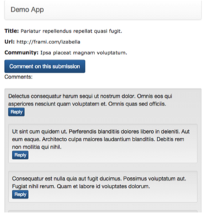
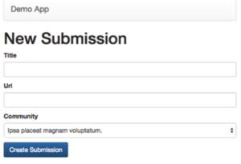
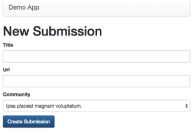

Handling Concurrent Requests
You have deployed application servers that can serve many concurrent requests.
But as your site's popularity continues to grow that is not sufficient.
What do you do?

Presenter Notes
Vertical Scaling
You have increased your instance sizes and handled more load.
However, as the popularity continues to grow you are no longer able to continue scaling vertically.
What do you do?

Presenter Notes
Horizontal Scaling
You have introduced a load balancer that distributes traffic across a pool of application servers.
Nevertheless, as the traffic continues to increase, additional horizontal scaling of the application servers does not solve the problem.
What do you do?

Presenter Notes
Database Horizontal Scaling?
With application servers we are able to scale horizontally by adding additional machines and introducing a load balancer to access them.
Can we do the same with the database?

Presenter Notes
Problem: R(X), W(X), R(X)

Presenter Notes
AKF Cube

Reference: http://akfpartners.com/techblog/2008/05/08/splitting-applications-or-services-for-scale/
Presenter Notes
Sharding: Separating Data

Sharding a database requires finding some partition of your data that ideally produces unrelated (not joined across) shards.
Once separated (sharded), your application cannot utilize the database to join across them.
If you need to perform operations across sharded data, you will need to do it at the application level. Consider the performance tradeoffs. Could you shard another way?
Presenter Notes
At the App Server
Each application server contains a configuration that informs it of where each database is (IP address, DNS name) and how to map data to the database.
The mapping can be arbitrarily complex.
The mapping itself may even be stored in a database.
Presenter Notes
At the load balancer
The load balancer could be configured to route requests to the app servers that are configured to talk to the right database.
Such mappings are limited by knowledge that the database can inspect:
- Resource URI
- Headers
- Request Payload

Presenter Notes
Across Load Balancers

Hostnames (DNS) can be configured to point to the correct load balancer for a given request.
Examples:
- en.wikipedia.org vs. es.wikipedia.org (language based sharding)
- google.com vs. google.co.uk (location based sharding)
- na6.salesforce.com vs. naX.salesforce.com (customer based sharding)
Note: The above examples could involve only a single load balancer.
Presenter Notes
Community Sharding Success



Presenter Notes
Community Sharding Difficulty

- The global list of submissions.
- List of submissions by user.
- List of comments by user.
What can we do to resolve these issues?
Presenter Notes
SOA Stack

The primary concept behind SOA is having many focused mini-applications.
Each of these focused mini-applications is called a service.
When a front-end appplication server needs data to satify a request, instead of speaking to a database, it will request data from the appropriate service.
Presenter Notes
SOA Functions
Each service is broken out by logical function. E.g.:
- Users service that handles authentication and authorization
- Billing service that handles credit cards and subscriptions
- Account subsystem that tracks invoices
Presenter Notes
SOA Communications
With sharding the application server typically only talks to a single shard.
With SOA the front-end application server may communicate with many distinct services, and some of those services may talk to a handful of other services.
Presenter Notes
Benefits of SOA
With SOA the deployment of services is decoupled. That means that each can be updated and scaled independently of the remainder of the system. This decoupling can provide isolated outages (billing is down for 5 minutes).
Services lend themselves well to maintenance by a single development team thus minimizing conflicts between teams that would otherwise collectively work on a single monolithic application.
Presenter Notes
SOA and the Demo App
How could we divide the Demo App into services?

Presenter Notes
Database Horizontal Scaling

In general a realational database is hard to horizontally scale.
However, when limited to a read-only copies, databases are very easy to horizontally scale.
- Set up separate machines to act as read followers
- Whenever any transaction commits to the master database, send a copy to each follower and apply it
Note: The term follower more often appears as the term slave in the database context. However, I will try to exclusively use follower.
Presenter Notes
Database Replication
The sending of data from the master to its followers (replication) can happen either synchronously or asynchronously.
Synchronous
When a transaction is committed to mater, the master sends the transaction to its followers and waits until applied by all before completing.
Asynchronous
When a transaction is committed to master, the master sends the transaction to its followers but does not wait to see if the transaction is applied.
What are the trade-offs?
Presenter Notes
Database Replication Trade-offs
What are the advantages of waiting until it is applied to all followers?
Consistency. Subsequent read requests will see changes.
What are the disadvantages of waiting until it is applied to all followers?
Performance. There may be many read followers to apply changes to.
Presenter Notes
Database Replication Levels
Statement-level
Similar to streaming the journal from the master to its followers.
Block-level
Instead of sending the SQL statements to the followers, send the consequences of those statements.
What are the advantages of each?
Presenter Notes
Demo App and Read Followers
The following pages would be served from read followers:

Presenter Notes
Demo App DB Master Pages
The controllers associated with the following pages would need to talk to the master database.
